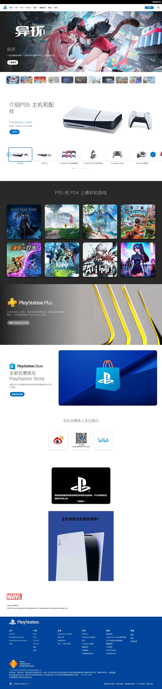

Playstation 主题
Playstation 的 Design.md 主题展示，围绕游戏娱乐、消费品牌、电商零售、品牌展示组织页面。
Gaming console retail. Three-surface channel layout, quiet-authority display type, cyan hover-scale.
游戏娱乐消费品牌电商零售品牌展示

来源
- 来源
- getdesign.md
- 镜像
- github:VoltAgent/awesome-design-md
- 网站
- https://www.playstation.com/
- 详情
- https://getdesign.md/playstation/design-md
色板
#0070d1: #0070d1#004d8d: #004d8d#0064b7: #0064b7#ffffff: #ffffff#53b1ff: #53b1ff#d53b00: #d53b00#aa2f00: #aa2f00#d63d00: #d63d00#000000: #000000#121314: #121314#181818: #181818#1f2024: #1f2024
字体
display: PlayStation SSTbody: PlayStation SSTmono: ui-monospacehints: PlayStation SST,ui-monospace,Inter,Roboto
圆角
control: 4pxcard: 8pxpreview: 16pxpill: 9999pxsource: design-md
间距
xxs: 4pxxs: 8pxsm: 12pxmd: 16pxlg: 24pxxl: 32pxxxl: 48pxsection: 96pxsource: design-md
使用建议
建议
- 建议：Reserve {colors.primary} (PlayStation Blue) for primary CTAs and the footer surface only. The blue band is precious — at most one full-bleed blue band per page。
- 建议：Reserve {colors.commerce} (orange) for store/buy/pre-order CTAs only. It is never used on marketing chrome or hero pills。
- 建议：Use PlayStation SST at weight 300 for display headings (54 / 44 / 35 / 28 / 22). The light weight is the brand voice。
- 建议：Stack content sections at {spacing.section} (96px) rhythm with the next band's surface color taking over the page edge-to-edge — no decorative dividers between bands。
- 建议：Use {rounded.full} (9999px) on every CTA pill and {rounded.md} (8px) on every product card. The two-radius vocabulary is the entire shape system aside from inputs。
避免
- 避免：introduce drop shadows on resting cards. The system is flat-on-canvas; cards lift only on press。
- 避免：replace {colors.primary} with another shade of blue. The brand blue is precise — {#0070d1} for default and {#0064b7} for pressed。
- 避免：use {colors.commerce} (orange) on marketing/hero CTAs. It's reserved exclusively for store actions。
- 避免：introduce a sans-serif body font, italic, or monospace style. PlayStation SST carries every text role。
- 避免：soften pill geometry. CTAs are always {rounded.full} — no medium-radius buttons。
查看 DESIGN.md